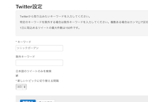

youRoomにおけるチーム活動を支援する
優秀なアシスタント機能
チームやプロジェクトでの活動において、煩雑な仕事や誰にでもできる仕事はすべてコンピュータにやらせるべき。そこで、チーム内の仮想アシスタントとして面倒な仕事を処理してくれるのがyouRoomアシスタントです。
-
リマインダー機能、Twitterのつぶやき取得機能など、youRoomをより便利に使うための機能を備えています。
-
youRoomアシスタントの機能はいずれも無料で提供されます。設定も簡単。
youRoomアシスタントのはじめかた
-
1
youRoomのアシスタント管理画面を開きます。
(管理者権限のあるルーム > ルーム管理 > アシスタント) -
2
「アシスタントの利用を開始する」ボタンをクリックします。
-
3
各機能の設定は上記のリンクをクリックしてください。設定用の外部サイトが開きます。
リマインダー
-
忘れがちな毎月のタスクをアシスタントがお知らせ！
毎月の決まった作業を忘れずにするのは大変です。それをチームで共有するとなれば、なおさら大変です。
youRoomアシスタントのリマインダー機能を使えば、毎月の決まった日に予め登録しておいたメッセージがyouRoomに書き込まれます。
-
タスクの進捗も可視化されます
チームのメンバーは定期的に発信されるアシスタントのメッセージをトリガーにして、作業に取りかかることができます。普段からyouRoomを活用しているチームであれば、自然にメッセージを受け取れるはずです。youRoomはタスクを管理するツールとしても優れているため、リマインダー機能とは大変相性が良いのです。
こんなケースで使えます
- 毎月の請求書の発行を忘れないようにする
- 毎月の経費の入力を忘れないように全員に指示する
リマインダーの設定方法
-
1
アシスタントのルーム設定画面にある「リマインダーを作成する」リンクをクリックします。
-
2
スケジュールとメッセージを入力します。
-
3
「登録する」ボタンをクリックすれば設定完了です。以降はスケジュールに設定された日になるとメッセージがyouRoomに投稿されます。
Twitter取り込み
-
Twitter上のつぶやきを収集してチームで共有しましょう
自分たちの作品やサービスに関するTwitter上のつぶやきは、当然誰でも気になりますよね。
youRoomアシスタントのTwitter取り込み機能を使えば、設定されたキーワードに関するつぶやきを一定時間おきに取得して、youRoomに書き込んでくれます。
youRoomのルーム内に書き込まれたつぶやきはチーム内で共有することができます。着目すべきつぶやきがあれば、そこへコメントをつけることもできるので、youRoomをユーザサポートに活かすこともできます。
こんなケースで使えます
- 自社製品の口コミの様子をチームで共有したい
- ハッシュタグでイベント時のつぶやきを集めたい
Twitter取り込みの設定方法
-
1
「Twitterで認証する」ボタンをクリックして、Twitter認証を行います。(初回のみ)
-
2
Twitterから取り込みたいキーワードを指定します。特定のキーワードを除外する場合は除外キーワードを入力してください。複数ある場合はカンマ(,)で区切ります。
-
3
「登録する」ボタンをクリックすると設定完了です。以降は定期的に条件に合致するツイートがyouRoomに取り込まれます。
Pivotal Trackerとの相互連携
-

Pivotal TrackerとyouRoomを連携させて、さらにアジャイルなソフトウェア開発を
アジャイルにソフトウェア開発をするチームなら、youRoomをきっとうまく活用できます。
また、Pivotal Trackerはアジャイル開発に最適な要件管理ツールです。
youRoomアシスタントを利用してこの二つのツールを連携させれば、アジャイルなソフトウェア開発をさらに加速させることができます。
-
youRoom上での議論を即座にチケット化
youRoom上で議論した内容をPivotal Trackerのチケットとして登録したい場合、Pivotal Trackerに同じ情報を書き込むのはDRYではありません。
youRoomアシスタントを導入すれば、特定の書式を持ったコメントからPivotal Trackerのチケットが自動的に作成されます。
また、チケットのDescriptionにはyouRoomのURLも記入されます。
-
開発の進捗をyouRoom上でキャッチ！
Pivotal Trackerのチケットが次のステータスに進むとyouRoom上に通知されます。わざわざPivotal Trackerに見に行かなくても、youRoomを確認するだけで開発の進捗を把握することができます。
Pivotal Tracker連携の設定方法
-
1
Pivotal Trackerにアクセスし、 PROFILEページ に表示されているAPI Tokenと、ProjectページのURLに表示されているProject IDを確認します。
-
2
アシスタントのルーム設定画面を開き、API TokenとProject IDを入力すれば設定完了です。
-
3
以降は定期的にPivotal TrackerとyouRoom間で情報がやりとりされます。youRoomの議論からチケットを発行したい場合は、「#pivo:(チケットのタイトル)」という書式でコメントを書き込みます。